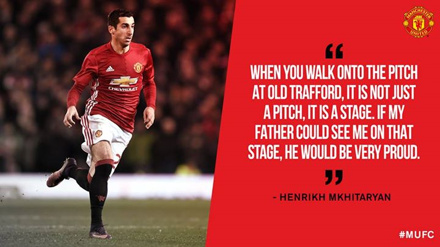
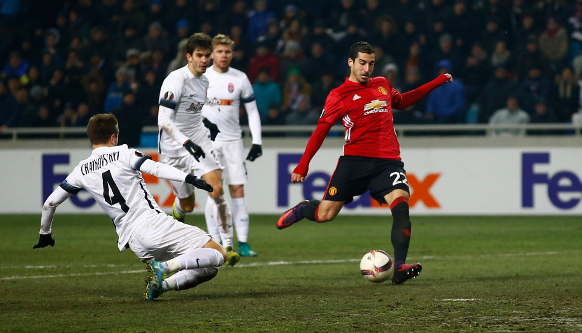

Match & Player news
 10/12/2016 10:24, Report by Ivan Spasov
MKHITARYAN: I SHOWED I'M A TOP PLAYER
Henrikh Mkhitaryan is happy to have proved his quality in recent games for Manchester United, after taking the chance given to him by manager Jose Mourinho.
After a two-month absence from the match squad, the Armenian summer signing has started three of the Reds’ last four games and was named Man of the Match in the victories over Feyenoord and West Ham United.
Now he’s hoping to be involved in Thursday’s crucial Europa League game against Zorya Luhansk in Ukraine, a country he knows well from his time at Shakhtar Donetsk. Speaking at Wednesday’s pre-match press conference in Odessa, the 27-year-old said: "I started playing so I’m positive. I think positively and I am glad to have more playing time for the future because it’s something that is not predictable.
"You have to be ready for every situation. I was ready and I showed I am a top-level player. It doesn’t matter if I am going to play or not, I am always ready to help the team." While understandably reluctant to go into specific details, Mkhitaryan also touched upon what he had discussed with the boss when he was trying to break into the team.
"I don’t want to talk about that because it’s in the past already. But we have spoken a lot; first, when I came here and he told me what I have to improve. I think he saw I improved in that time and he gave me the next chance to play again.
"If you tell me that in any one of our draws, the opponent was closer to winning than us, I will tell you that is completely untrue. In every one of our draws, we were much more closer to winning than the opponent and we deserve to win these matches. I repeat, this season what matters is the results, it's not the quality of football."
"It was difficult to watch the games without me but I have proved that I can play with the main squad. Now I can repeat it and I can prove it again." Mkhitaryan spent four years with Shakhtar from 2010 to 2013 before moving to Borussia Dortmund, and local journalists were unsurprisingly keen to ask him about his return to Odessa, where he enjoyed one particularly successful outing as a Donetsk player against Chornomorets in 2012.
"It's always a pleasure to be here in Ukraine," the playmaker added. "I have very good memories of playing here. I had four amazing years playing in Ukraine and my last game in Odessa was a very good one because I scored my first hat-trick for Shakhtar, so I am pleased to be here again."